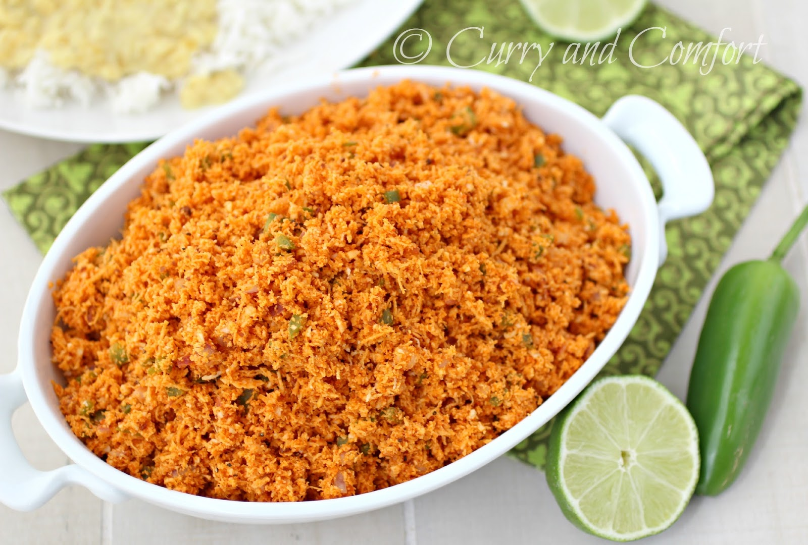
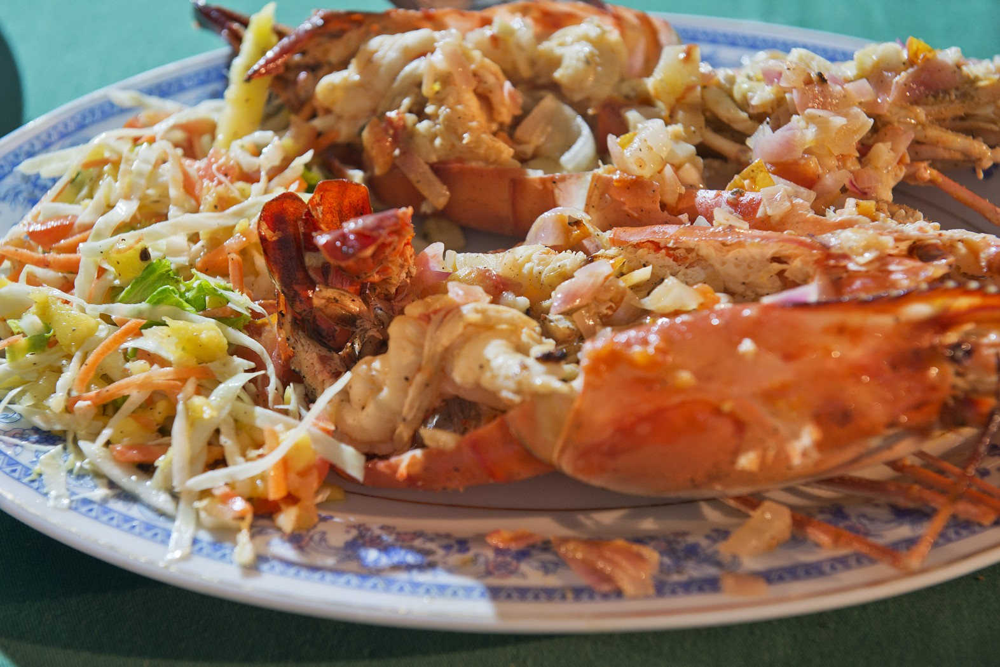

Article Wriiten by Yazeen Thariq.
The tear-shaped Indian Ocean island of Sri Lanka is a true culinary treat. Through years of colonisation and trade, many cultures have influenced its cuisine, creating a spice-filled fusion of Dutch, Portuguese, English, Malay, Indian and indigenous flavours to tantalise the taste buds. There’s certainly no shortage of fish, seafood, vegetables and spices to turn into tempting curries. Coconut plays a key role in dishes, as well as arrack, the potent homegrown spirit distilled from the sap of coconut flowers. There’s always thambili, or sweet king coconut water, for the morning after.
Here are 10 Sri Lankan foods you need to try on your trip to this beguiling isle.
1. Egg Hoppers
Traditionally eaten at breakfast, the savoury, bowl-shaped Sri Lankan take on pancakes are delicious any time. They’re made from a batter of fermented rice flour, coconut milk, coconut water and a sprinkling of sugar, that’s cooked in a small, high-sided wok-like pan. An egg is broken into it while it cooks and it’s served with a spicy sambol.
2. Sambol
The classic side dish, sambols are fresh and often fiery, chunky sauces, usually made with a stone pestle and mortar. Pol sambol is a mix of finely grated coconut, dried red chillies, red onion, lime juice and a dash of Maldive fish, or cured tuna. Other perennial favourites include sweet-and-sour seeni sambol, made with caramelised onion, and sharp-and-spicy lunu miris, a flavoursome fusion of onions and red-hot chillies.

3. Vegetable curry
Traditionally eaten at breakfast, the savoury, bowl-shaped Sri Lankan take on pancakes are delicious any time. They’re made from a batter of fermented rice flour, coconut milk, coconut water and a sprinkling of sugar, that’s cooked in a small, high-sided wok-like pan. An egg is broken into it while it cooks and it’s served with a spicy sambol.
4. Dhal
Dhal, or lentil curry, is a staple Sri Lankan side dish, often eaten two or three times a day. Red lentils are cooked in coconut milk, with onions, piquant green chillies and spices such as cinnamon, cumin, fenugreek and pandan leaves. Thinner than its Indian counterpart, with amped up spices, it’s extra tasty when made in a traditional clay pot.
5. Crab
Seafood plays a major role in the country’s diet, and Sri Lanka’s lagoon crabs are justly famous the world over for their succulent sweet meat. Colombo’s Ministry of Crab – which makes a regular appearance on Asia’s best restaurant lists – celebrates this iconic crustacean. The catch-of-the-day comes in a range of sizes, from half a kilo to the whopping two-kilo Crabzilla, in time-honoured recipes, including chilli crab, pepper crab and curry crab.
